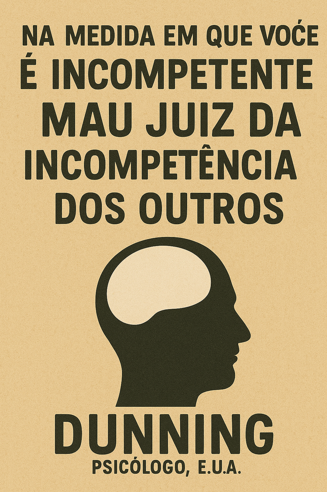

Publicado em 2025-05-22 21:59:29
O ideal democrático parte de um pressuposto encantador: que os cidadãos, munidos de liberdade e informação, saberão escolher os melhores líderes e as ideias mais justas. Mas e se essa suposição estiver errada? E se, no fundo, a democracia for tão vulnerável às limitações cognitivas humanas quanto qualquer outro regime?
David Dunning, psicólogo da Universidade de Cornell, desferiu um golpe de lucidez nesse mito. A sua investigação revelou algo inquietante: as pessoas incompetentes são, por definição, incapazes de reconhecer a sua própria incompetência — e, portanto, igualmente incapazes de avaliar a competência dos outros.
Ora, se um cidadão comum não compreende os fundamentos da reforma fiscal, da organização dos sistemas de saúde ou das dinâmicas económicas globais, como poderá distinguir um bom candidato de um charlatão eloquente? Como poderá reconhecer a profundidade de uma ideia se lhe faltam as ferramentas mentais para compreendê-la?
Dunning e Justin Kruger, na sua famosa teoria, mostraram que a maioria das pessoas tende a sobrestimar as suas capacidades — acham-se acima da média em tudo, do humor à gramática. Essa confiança ilusória produz o mais perigoso dos eleitores: aquele que não sabe o que não sabe, mas vota como se soubesse tudo.
O sociólogo Mato Nagel simulou este fenómeno em eleições virtuais. Os resultados foram claros: os eleitores, por não reconhecerem competências superiores às suas, tendem a escolher líderes apenas ligeiramente mais capazes do que eles próprios. Resultado? Democracias não elegem os melhores. No melhor dos casos, evitam os piores.
Essa é a tragédia serena da democracia moderna: não elege génios, mas bons marketeers. Não ascende os visionários, mas os que melhor traduzem ideias complexas em slogans ocos. E quando o conhecimento é penalizado por soar difícil, os líderes tornam-se espelhos da ignorância coletiva.
Neste cenário, a democracia transforma-se num concurso de popularidade entre mediocridades aceitáveis. As ideias mais sofisticadas são descartadas por serem “demasiado difíceis”, enquanto soluções fáceis, simplistas e falaciosas ganham terreno — porque confortam.
O alerta de Dunning é claro: se não educarmos o eleitorado, a democracia será apenas a ilusão de escolha livre. Um espetáculo onde se vota de olhos fechados e onde os palcos são ocupados não por estadistas, mas por atores competentes a parecer competentes.
Talvez o maior desafio da democracia do século XXI não seja combater os autoritarismos externos, mas os autoenganos internos.
Francisco Gonçalves
Publicado em Fragmentos de Caos, baseado num texto escrito originalmente em fgonblog.blogspot.com em 2008.
Um desabafo sobre o silêncio que sufoca quem ousa pensar.
Uma reflexão sobre o ato de escrever num país que prefere calar.